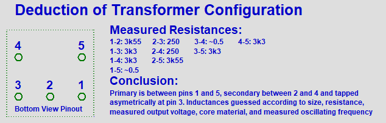
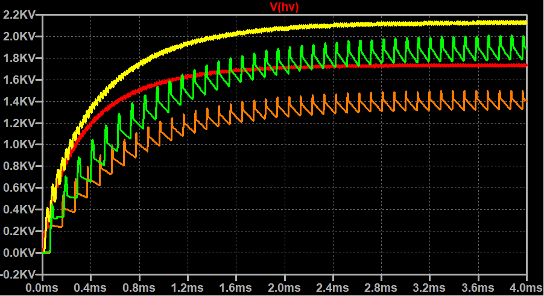

This is one of those simple circuits for which can be found a lot of very poor explanations. I took one apart and did a simple analysis--now I have the feeling that I have something to say about it.
The first thing that we do is to measure the output voltage. To get a general idea of what might be expected, it is useful to remember that the dielectric strength of air is around 3kV per mm. The electrode screens on the device are separated by a couple millimeters, and no arcing occurs spontaneously so we aren't dealing with 10's of thousands of volts. But a value of a couple thousand would not be suprising. Since we don't want to try to measure anything bigger than 1000V with the multimeter, we add a 1Meg resistor in series with the 10Meg load resistor. Measuring across the 1Meg resistor shows a voltage of 165V--ignoring internal resistance of the DMM for now--the full output voltage is around 1.8kV.
The next step in understanding this device is extracting a schematic representation from the physical circuit. This is no big deal, and can be accomplished readily using a combination of visual inspetion, resistance measurements, and diode drop measurements. Just looking at the PCB inside of one of these devices (purchased from Harbor Freight) reveals three important parts of the circuit: 1. Some type of transformer with 5 pins, 2. Some type of 3 terminal TO-92 package device -- revealed to be an npn transistor upon reading its label, and 3. A string of capacitors and diodes which is clearly a voltage multiplier.
Just by looking, we can see how all these parts are connected. Though we don't know the configuration of the transformer yet, we can see that it has the following pin connections: one directly to the 3V supply, one to the 3V supply through a 3k3 resistor, one to the first capacitor of the voltage multiplier, and two to the transistor. Next, using the multimeter to measure the transformer's pin to pin resistances, we are futher able to determine a probable configuration. Below is a summary of those measurements:
This doesn't mean a whole lot on its own, but combined with physical measurements of the core and knowledge of the resistivity of the wire used, we can estimate the length of the wires making up each coil, and thus the number of turns, and the inductance.
The coils between pins 3 and 4, and pins 1 and 5 appear to be wound with the same wire, which to me looks like 26AWG, or maybe 28. The other coil, between 3 and 2 appears to be no bigger than 34AWG--and possibly smaller. Since the DMM does not accurately measure very low resistances, the measurement of the higher resistance coil will yeild a more accurate calculation of the length. It just so happens that 1000ft of 34AWG wire is approximately 260 ohms - pretty close to what we measured. But does 1000ft make sense?
Lucky for us, the transistor had a legible lable on it -- however, we could have determined its pinout by measuring diode drops between pins, assuming none of the other diodes on board were connected in any way that could cause deception. Anyway, in the next section is a picture of the LT Spice schematic including notes on how I determined the transformer configuration.
Note that the transistor model used uses all SPICE default values aside from those shown, which were chosen to emulate performance reported in the datasheet. Also, I have used a coupled inductor model transformer here, which assumes perfect coupling and no copper or core losses. A more detailed simulation with a nonideal transformer model with a saturable core will show up sooner or later. A transient simulation is shown below.
The simulated output comes really close to what I measured. Why? I will add that tomorrow. Be ready to anticipate reading here what causes this thing to oscillate, and how 1.8kV is generated from 3V.